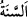

14. Biz insana, ana-babasına iyi davranmasını tavsiye etmişizdir. Çünkü anası onu
nice sıkıntılara katlanarak taşımıştır. Sütten ayrılması da iki yıl içinde olur. (İşte
bunun için) önce bana, sonra da ana-babana şükret diye tavsiyede bulunmuşuzdur.
Dönüş ancak banadır.
“Biz insana, ana-babasına iyi davranmasını tavsiye etmişizdir.” Bu cümle, Hz.
Lokman (a.s.)’ın öğütleri arasında bir ara cümledir ve öğütler içinde yer alan şirkten
nehyi te’yid etmektedir. Yâni biz insanlara, baba ve annelerine ve onların hukuklarına
riâyet etmeleri hususunda tavsiyede bulunduk. Bu ifâdenin ardından Allah Teâlâ, anneyi
öne alarak ve anne-baba hakkının büyüklüğünü vurgulayarak şöyle buyurur: “Çünkü
anası onu nice sıkıntılara katlanarak taşımıştır.” Nitekim cenîn anasının karnında
büyüdükçe, onu dünyâya getirene kadar ananın sıkıntısı arttıkça artar. “
”, yaratılış
ve ahlak bakımından zayıflık demektir.
“Sütten ayrılması da iki yıl içinde olur.”
“__WORD__, çocuğu sütten kesmek demektir. Annesini emzirmeyi bırakan deve yavrusuna
“__WORD__ denilir.
“__WORD__, sene/yıl demektir. Fakat “__WORD__ kelimesi daha çok içinde kuraklık ve kıtlık
bulunan yıl için kullanılır. Bu sebeple kuraklık ve kıtlık “__WORD__ kelimesiyle, içinde
bolluk ve genişlik olan zaman ise “__WORD__ kelimesiyle ifâde edilir.
Yâni insanın sütten kesilmesi, doğumdan itibaren iki yılın sonunda olur. Bu müddet,
Şâfiî’ye göre emzirme süresidir. İki yıldan sonra süt emmeden dolayı evlenme yasağı
(hurmet-i radâ‘) sâbit olmaz. Bu, “Emzirmeyi tamamlatmak isteyen (baba) için,
anneler çocuklarını iki tam yıl emzirirler.” (el-Bakara, 2/233) âyetinde olduğu
gibidir. Ebû Hanîfe’ye göre ise süt emzirme müddeti iki buçuk yıldır. Nitekim Allah
Teâlâ “Taşınması ile sütten kesilmesi, otuz ay sürer.” (el-Ahkâf, 46/15) buyurmuştur.
Bu husus Ahkâf sûresinde gelecektir. Bu müddetten sonra süt emmeden dolayı evlenme
yasağı sâbit olmaz. Şu halde Ebû Hanîfe’ye göre çocuk ihtiyaç duymayana kadar
emzirmek vâcib, iki yıla kadar emzirmek müstehab, iki buçuk yıla kadar emzirmek ise
câizdir.
Süt emmeden dolayı evliliğin haramlığı konusunda Ebû Hanîfe ve Şâfiî arasındaki
ihtilaf işâret edildiği gibidir. Emzirmeye karşılık ücreti hak etmek ise iki yıl olarak
takdir edilmiştir. İki yıldan sonra babanın emzirme nafakası vermesi ittifakla vâcib
değildir. Konunun tamamı, fıkıh kitaplarının “emzirme” bölümünde bulunabilir.
el-Vasît’ta: “Âyetin maksadı, doğumdan sonra çocuğu iki yıl emzirmekle ananın